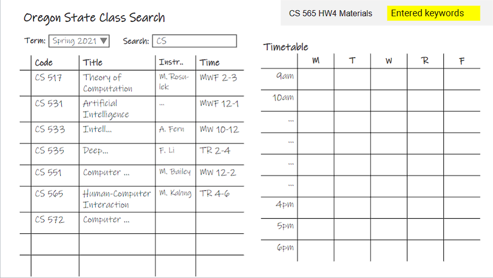
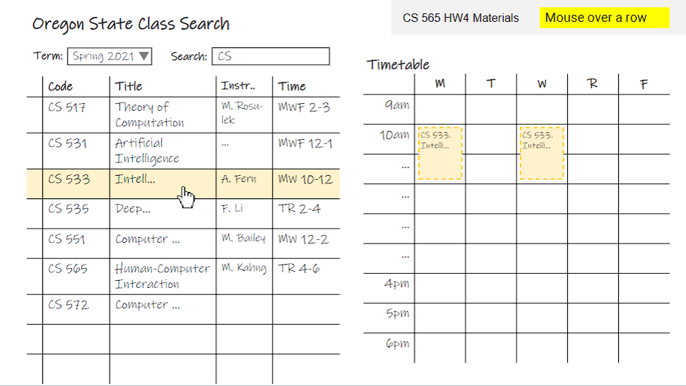
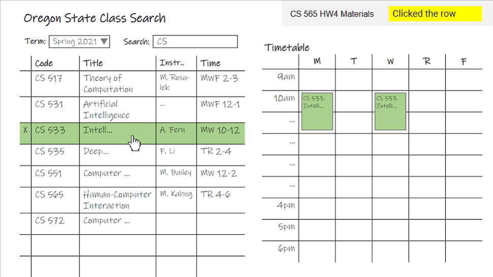
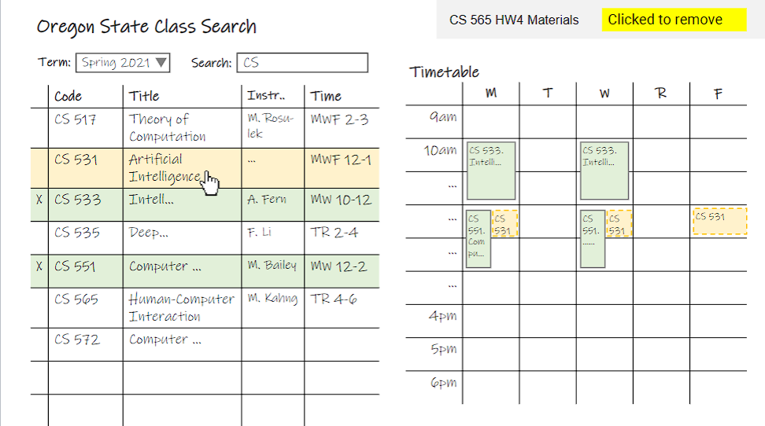
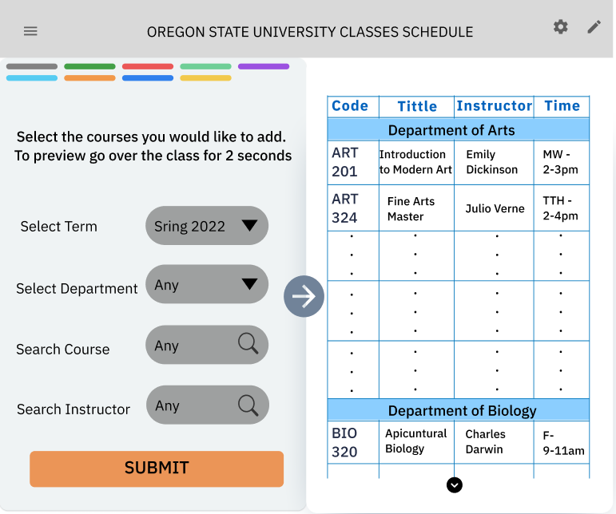
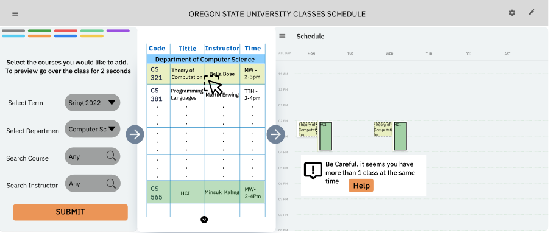
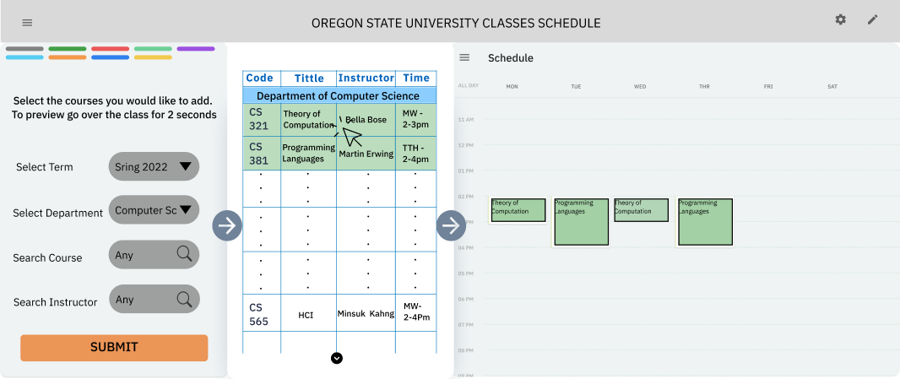

Search for classes
Filters support faster narrowing by term, department, course, and instructor.
UX Case Study / Scheduling Workflow
A course-search redesign for graduate students who need to evaluate classes while seeing how their weekly schedule will take shape.
Design Goal
The previous scheduler made students search courses separately from understanding how those choices fit their weekly schedule. The redesign brings filtering, previewing, adding, and conflict handling into a clearer flow.
Low-Fidelity Direction

Filters support faster narrowing by term, department, course, and instructor.

Students can inspect how a class affects their week before committing.

Selected classes move into the weekly view so the schedule becomes tangible.

Conflict states and removal actions help students recover without losing context.
High-Fidelity Principles

Filter controls are aligned and formatted consistently, and classes are grouped by department for easier scanning.

The interface explains how to interact with classes and makes selected states easier to recognize.

Students can add, see conflicts, and remove classes without breaking the flow.
Outcome
The redesign keeps search and schedule context visible together, helping students compare options, preview weekly impact, and build confidence before finalizing selections.